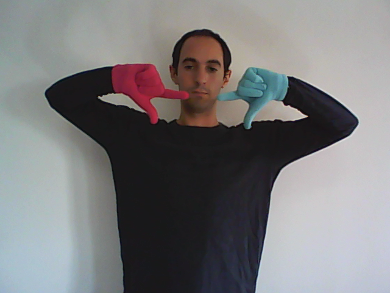

Reconocimiento de Lengua de Señas Argentina
Un sistema de reconocimiento de Lengua de Señas (RLS) que facilita la integración de la comunidad sorda mediante la traducción automática, pero también mediante el desarrollo de sistemas automatizados de enseñanza de LS, dada la falta de intérpretes y docentes de LS.
